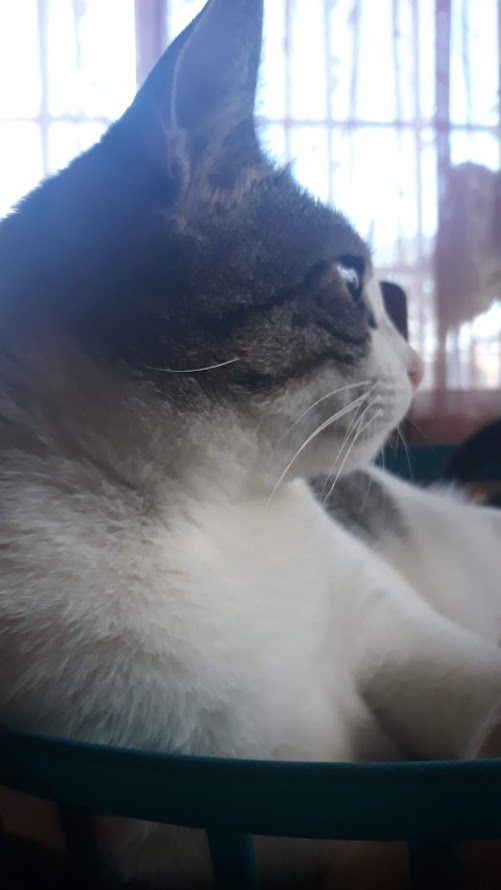

A few months after the break up, someone I know told me, "If they truly love you, they'll come back". Guy was right. The dude was going through a messy divorce and his wife literally always came back. At the time I was like, damn she didn't love me. I was 50/50 unsure that you'd return. Happy you did though.
Perhaps one day we'll be together again... or not. I think a relationship is something that no one needs but wants and to want something is to fight for it, to like it. Why am I updating this knowing you'll probably never read this. Hope is what keeps me going. Its dangerous, it can make you or it can break you.
I'm still working on me and I'm coming back better for you. I wanna take the weight off your shoulders too.
I feel like I have an obligation to update this. I still think that you do come back and check this. Stupid of me. Sucks that I can't let go. How can I?
We've both expressed love for each other and we support each other...right? You said that you aren't ready for a relationship and I told you that I know what to do this time around, and that's very much true. You are beautiful, pretty, something worth spending time just admiring. It sucks that I fell in love with someone so unique and rare because you are truly one of a kind. No one else compares to you, can't even come close. To find someone else like you is next to or is impossible.
I'm proud that you built a life for yourself, I'm so happy for you. I'm very grateful to have known someone like you
I still very much deeply love you.
And after everything, we managed to find our way back to each other
As I'm writing this, things may not be rainbows and sunshine
ik you're prolly tired of me and i wanna say sorry. I'm sorry for everything
i did to you. I really dont want you to change into someone i dont recognize
I love the old you, the person I met in 2017 at the hotel
I love you
This is an update right before releasing it to you. I just wanna say that I'm happy that I was able to give you the flowers that so long dreamt of. Initially I wasn't gonna get you flowers but i figured you deserved the best so i tried. I also thought i wouldn't be able to get you it because I'm too shy. I was afraid that I was gonna let you down again and im happy that i didnt. I hope to do better next year.
I love you
This the day you texted me saying let's start over, it was a tuesday or monday
I think. I went to school appy because the love of my life asked me to start over.
I told my friends about you and they all told me to go for it. So I texted you
after to school to come over and you did.
I love you
You came around 4pm, and at first it was awkward for me, idk bout you. This is the picture
I took minutes before you came to my house.

The iconic misha lmao
I'll never forget this day i had with you, because it was the first time i kissed
you. I've never been that happy. When you left my house, i was happy and i been happy
ever since.
I love you
You brought light into my life when there was none
You helped me in ways no one could've ever done
You were there for me when i needed you
I never cared if you were pretty or not but you being pretty is a plus i get to enjoy
ever since i laid eyes on you, I told myself that one day I'm going to date you
It's like a dream that never ended. I look at you and I see a bright light and pretty woman
You make every other woman look unattractive
I'm glad I met you and I've never regreted chosing you.
I love you
Cheating:
Why would I wanna cheat on you when you provide everything I need
As I said, you make every other girl unattractive.
You are the prettiest girl. PERIOD!!
To prove it, I always am home alone waiting for you to show up.
You think I dont love you?
Pookie, I will always love you until my last breath, even in the afterlyfe i would love you.
Forever and ever my love
Someone else at school?
On everything i love, the mishos and my dead aunt, I don't speak to anyone at UB
When i go to school alone, i stay alone and i go home alone. I play my music and i walk.
I love you
In all together, I love you and only you. I would never that stupid to do anything behind your back and the past? Let the past be the past and lets move on forward. I am not that person. I will always be there for you no matter what. Even when you out of love with me, I will always be there for you even when you don't see me. Even we aren't together, I'll always love you. Even when im not breathing anymore, I'll always look over you.
I love you baby
I love you